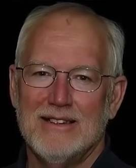
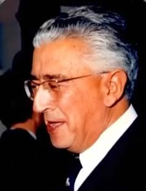

در طول 1400 سال گذشته خیلی ها بودند که نه به پیامبری حضرت محمد اعتقادی داشتند نه به الهی بودن قرآن
مثلا گری میلر ریاضیدان و کشیش کانادایی که برای رد قرآن شروع به مطالعه قرآن میکنه اما این مطالعه در نهایت باعث میشه در سال 1978 مسلمان بشه
موریس بوکای پزشک و نویسنده معروف فرانسوی پس از تطبیق آیات قرآن با یافته های علمی قرآن را منطبق بر علم روز و فاقد خطای علمی یافت در سال 1976 مسلمان میشه
جفری لنگ ریاضیدان آمریکایی با مطالعه قرآن پی برد که این کتاب کلام بشر نیست و در سال 1982 مسلمان میشه
جوئل هیوارد محقق بریتانیایی و رئیس سابق دانشکده سلطنتی کرانول با مطالعه قرآن در سال 2005 مسلمان میشه
آرنو فان دورن سیاست مدار هلندی و یکی از تهیه کنندگان فیلم ضد اسلامی بود اما بعد از تحقیق و مطالعه قرآن در سال 2013 مسلمان میشه
دکتر هنری کلاسِن دانشمند برجسته سلول های بنیادی در سال 2024 بعد از تحقیق و مطالعه قرآن مسلمان میشه و اسمشو به عبدالحق تغییر میده
نه از روی تقلید بلکه با تحقیق و تفکر به این نتیجه رسیدند که قرآن نمیتونه کلام یک انسان باشه
حالا ما حرف شما را قبول بکنیم یا حرف متخصصین و دانشمندان غربی
که با مطالعه قرآن نه از روی تقلید ایمان آوردن که این کلام ، کلام بشر نیست و مسلمان شدند